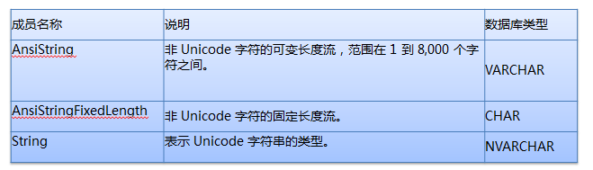
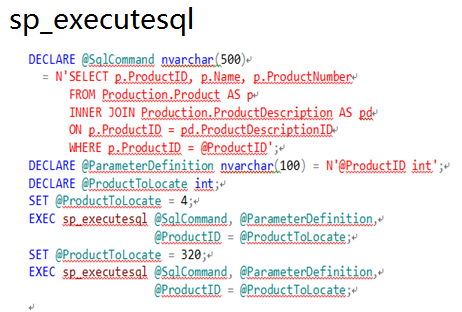

常见的字段类型选择
1.字符类型建议采用varchar/nvarchar数据类型
2.金额货币建议采用money数据类型
3.科学计数建议采用numeric数据类型
4.自增长标识建议采用bigint数据类型 (数据量一大，用int类型就装不下，那以后改造就麻烦了)
5.时间类型建议采用为datetime数据类型
6.禁止使用text、ntext、image老的数据类型
7.禁止使用xml数据类型、varchar(max)、nvarchar(max)
约束与索引
每张表必须有主键
- 每张表必须有主键，用于强制实体完整性
- 单表只能有一个主键（不允许为空及重复数据）
- 尽量使用单字段主键
不允许使用外键
- 外键增加了表结构变更及数据迁移的复杂性
- 外键对插入，更新的性能有影响，需要检查主外键约束
- 数据完整性由程序控制
NULL属性
新加的表，所有字段禁止NULL
（新表为什么不允许NULL？
允许NULL值，会增加应用程序的复杂性。你必须得增加特定的逻辑代码，以防止出现各种意外的bug
三值逻辑，所有等号（"="）的查询都必须增加isnull的判断。
Null=Null、Null!=Null、not(Null=Null)、not(Null!=Null)都为unknown，不为true）
举例来说明一下：
如果表里面的数据如图所示：

你想来找查找除了name等于aa的所有数据，然后你就不经意间用了SELECT * FROM NULLTEST WHERE NAME<>'aa'
结果发现与预期不一样，事实上它只查出了name=bb而没有查找出name=NULL的数据记录
那我们如何查找除了name等于aa的所有数据，只能用ISNULL函数了
SELECT * FROM NULLTEST WHERE ISNULL(NAME,1)<>'aa'
但是大家可能不知道ISNULL会引起很严重的性能瓶颈,所以很多时候最好是在应用层面限制用户的输入，确保用户输入有效的数据再进行查询。
旧表新加字段，需要允许为NULL（避免全表数据更新 ，长期持锁导致阻塞）（这个主要是考虑之前表的改造问题）
索引设计准则
- 应该对 WHERE 子句中经常使用的列创建索引
- 应该对经常用于连接表的列创建索引
- 应该对 ORDER BY 子句中经常使用的列创建索引
- 不应该对小型的表（仅使用几个页的表）创建索引，这是因为完全表扫描操作可能比使用索引执行的查询快
- 单表索引数不超过6个
- 不要给选择性低的字段建单列索引
- 充分利用唯一约束
- 索引包含的字段不超过5个（包括include列）
不要给选择性低的字段创建单列索引
- SQL SERVER对索引字段的选择性有要求，如果选择性太低SQL SERVER会放弃使用
- 不适合创建索引的字段：性别、0/1、TRUE/FALSE
- 适合创建索引的字段：ORDERID、UID等
充分利用唯一索引
唯一索引给SQL Server提供了确保某一列绝对没有重复值的信息，当查询分析器通过唯一索引查找到一条记录则会立刻退出，不会继续查找索引
表索引数不超过6个
表索引数不超过6个（这个规则只是携程DBA经过试验之后制定的。。。）
- 索引加快了查询速度，但是却会影响写入性能
- 一个表的索引应该结合这个表相关的所有SQL综合创建，尽量合并
- 组合索引的原则是，过滤性越好的字段越靠前
- 索引过多不仅会增加编译时间，也会影响数据库选择最佳执行计划
SQL查询
- 禁止在数据库做复杂运算
- 禁止使用SELECT *
- 禁止在索引列上使用函数或计算
- 禁止使用游标
- 禁止使用触发器
- 禁止在查询里指定索引
- 变量/参数/关联字段类型必须与字段类型一致
- 参数化查询
- 限制JOIN个数
- 限制SQL语句长度及IN子句个数
- 尽量避免大事务操作
- 关闭影响的行计数信息返回
- 除非必要SELECT语句都必须加上NOLOCK
- 使用UNION ALL替换UNION
- 查询大量数据使用分页或TOP
- 递归查询层级限制
- NOT EXISTS替代NOT IN
- 临时表与表变量
- 使用本地变量选择中庸执行计划
- 尽量避免使用OR运算符
- 增加事务异常处理机制
- 输出列使用二段式命名格式
禁止在数据库做复杂运算
- XML解析
- 字符串相似性比较
- 字符串搜索（Charindex）
- 复杂运算在程序端完成
禁止使用SELECT *
- 减少内存消耗和网络带宽
- 给查询优化器有机会从索引读取所需要的列
- 表结构变化时容易引起查询出错
禁止在索引列上使用函数或计算
在where子句中,如果索引是函数的一部分,优化器将不再使用索引而使用全表扫描
假设在字段Col1上建有一个索引，则下列场景将无法使用到索引：
ABS[Col1]=1
[Col1]+1>9
再举例说明一下

像上面这样的查询，将无法用到O_OrderProcess表上的PrintTime索引，所以我们应用使用如下所示的查询SQL

禁止在索引列上使用函数或计算
假设在字段Col1上建有一个索引，则下列场景将可以使用到索引：
[Col1]=3.14
[Col1]>100
[Col1] BETWEEN 0 AND 99
[Col1] LIKE 'abc%'
[Col1] IN(2,3,5,7)
LIKE查询的索引问题
1.[Col1] like “abc%” –index seek 这个就用到了索引查询
2.[Col1] like “%abc%” –index scan 而这个就并未用到索引查询
3.[Col1] like “%abc” –index scan 这个也并未用到索引查询
我想从上而三个例子中，大家应该明白，最好不要在LIKE条件前面用模糊匹配，否则就用不到索引查询。
禁止使用游标
关系数据库适合集合操作，也就是对由WHERE子句和选择列确定的结果集作集合操作，游标是提供的一个非集合操作的途径。一般情况下，游标实现的功能往往相当于客户端的一个循环实现的功能。
游标是把结果集放在服务器内存，并通过循环一条一条处理记录，对数据库资源（特别是内存和锁资源）的消耗是非常大的。
（再加上游标真心比较复杂，挺不好用的，尽量少用吧）
禁止使用触发器
触发器对应用不透明（应用层面都不知道会什么时候触发触发器，发生也也不知道，感觉莫名……）
禁止在查询里指定索引
With(index=XXX)（ 在查询里我们指定索引一般都用With(index=XXX) ）
- 随着数据的变化查询语句指定的索引性能可能并不最佳
- 索引对应用应是透明的，如指定的索引被删除将会导致查询报错，不利于排障
- 新建的索引无法被应用立即使用，必须通过发布代码才能生效
变量/参数/关联字段类型必须与字段类型一致（这是我之前不太关注的）
避免类型转换额外消耗的CPU，引起的大表scan尤为严重


看了上面这两个图，我想我不用解释说明，大家都应该已经清楚了吧。
如果数据库字段类型为VARCHAR，在应用里面最好类型指定为AnsiString并明确指定其长度
如果数据库字段类型为CHAR，在应用里面最好类型指定为AnsiStringFixedLength并明确指定其长度
如果数据库字段类型为NVARCHAR，在应用里面最好类型指定为String并明确指定其长度
参数化查询
以下方式可以对查询SQL进行参数化：
sp_executesql
Prepared Queries
Stored procedures
用图来说明一下，哈哈。


限制JOIN个数
- 单个SQL语句的表JOIN个数不能超过5个
- 过多的JOIN个数会导致查询分析器走错执行计划
- 过多JOIN在编译执行计划时消耗很大
限制IN子句中条件个数
在 IN 子句中包括数量非常多的值（数以千计）可能会消耗资源并返回错误 8623 或 8632，要求IN子句中条件个数限制在100个以内
尽量避免大事务操作
- 只在数据需要更新时开始事务，减少资源锁持有时间
- 增加事务异常捕获预处理机制
- 禁止使用数据库上的分布式事务
用图来说明一下

也就是说我们不应该在1000行数据都更新完成之后再commit tran,你想想你在更新这一千行数据的时候是不是独占资源导致其它事务无法处理。
关闭影响的行计数信息返回
在SQL语句中显示设置Set Nocount On，取消影响的行计数信息返回，减少网络流量
除非必要SELECT语句都必须加上NOLOCK
除非必要，尽量让所有的select语句都必须加上NOLOCK
指定允许脏读。不发布共享锁来阻止其他事务修改当前事务读取的数据，其他事务设 置的排他锁不会阻碍当前事务读取锁定数据。允许脏读可能产生较多的并发操作，但其代价是读取以后会被其他事务回滚的数据修改。这可能会使您的事务出错，向用户显示从未提交过的数据，或者导致用户两次看到记录（或根本看不到记录）
使用UNION ALL替换UNION
使用UNION ALL替换UNION
UNION会对SQL结果集去重排序，增加CPU、内存等消耗
查询大量数据使用分页或TOP
合理限制记录返回数，避免IO、网络带宽出现瓶颈
递归查询层次限制
使用 MAXRECURSION 来防止不合理的递归 CTE 进入无限循环
临时表与表变量

使用本地变量选择中庸执行计划
在存储过程或查询中，访问了一张数据分布很不平均的表格，这样往往会让存储过程或查询使用了次优甚至于较差的执行计划上，造成High CPU及大量IO Read等问题，使用本地变量防止走错执行计划。
采用本地变量的方式，SQL在编译的时候是不知道这个本地变量的值，这时候SQL会根据表格里数据的一般分布，"猜测"一个返回值。不管用户在调用存储过程或语句的时候代入的变量值是多少，生成的计划都是一样的。这样的计划一般会比较中庸一些，不一定是最优的计划，但一般也不会是最差的计划
如果查询中本地变量使用了不等式运算符，查询分析器使用了一个简单的 30% 的算式来预估
Estimated Rows =(Total Rows * 30)/100
如果查询中本地变量使用了等式运算符，则查询分析器使用：精确度 * 表记录总数来预估
Estimated Rows = Density * Total Rows
尽量避免使用OR运算符
对于OR运算符，通常会使用全表扫描，考虑分解成多个查询用UNION/UNION ALL来实现，这里要确认查询能走到索引并返回较少的结果集
增加事务异常处理机制
应用程序做好意外处理，及时做Rollback。
设置连接属性 “set xact_abort on”
输出列使用二段式命名格式
二段式命名格式：表名.字段名
有JOIN关系的TSQL，字段必须指明字段是属于哪个表的，否则未来表结构变更后，有可能发生Ambiguous column name的程序兼容错误
架构设计
- 读写分离
- schema解耦
- 数据生命周期
读写分离
- 设计之初就考虑读写分离，哪怕读写同一个库，有利于快速扩容
- 按照读特征把读分为实时读和可延迟读分别对应到写库和读库
- 读写分离应该考虑在读不可用情况下自动切换到写端
Schema解耦
禁止跨库JOIN
数据生命周期
根据数据的使用频繁度，对大表定期分库归档
主库/归档库物理分离
日志类型的表应分区或分表
对于大的表格要进行分区，分区操作将表和索引分在多个分区，通过分区切换能够快速实现新旧分区替换，加快数据清理速度，大幅减少IO资源消耗
频繁写入的表，需要分区或分表
自增长与Latch Lock
闩锁是sql Server自己内部申请和控制，用户没有办法来干预，用来保证内存里面数据结构的一致性，锁级别是页级锁
来源：http://www.codeceo.com/article/sql-server-tips.html
点我分享笔记
<p style="font-size:14px;">笔记需要是本篇文章的内容扩展！</p><br> <p style="font-size:12px;"><a href="../tougao.html" target="_blank">文章投稿，可点击这里</a></p> <p style="font-size:14px;"><a href="./runoob-user-test-intro.html" target="_blank">注册邀请码获取方式</a></p> <h3 class="text-muted"><i class="fa fa-info-circle" aria-hidden="true"></i> 分享笔记前必须<a href=".." class="runoob-pop">登录</a>！</h3> <p><a href="./runoob-user-test-intro.html" target="_blank">注册邀请码获取方式</a></p>